2e saisie OSM : tester
BMaranget
16/08/2023
1 Objectif
Après les bureaux de vote validés, la saisie va se faire sur les secteurs et les résidences sociales.
On utilise désormais l’éditeur JOSM
2 Utiliser JOSM
2.1 Paramétrage F12 pour lien remote
- serveur OSM
Utiliser l’identification simple
- contrôle à distance
2.2 Choix de la zone
Trouver les boutons :
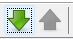
Essayer de télécharger toute la zone de Bondy, que se passe-t-il ?
Partir sur sa zone.
2.3 Basiques
- interface (panneaux) https://wikis.cdrflorac.fr/wikis/CartoEICC/files/TutoJOSM_josm_ui_20170116151152_20170116143347.jpg
{kind=link}
repérer notamment les différents calques et créer un calque vierge pour faire quelques exercices.
affichage imagerie aérienne
filtre
On annule les tracés des bâtiments, c’est pratique pour tracer d’autres zones sans en effacer.
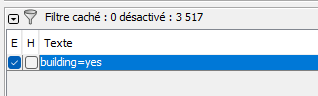
2.4 3 petits exercices JOSM
exercice 1 : utiliser mode s (sélectionner), a (ajouter), et w (modifier)
exercice 2 : osmecum intégrer le bati
Essayer par exemple de faire un polygone, d’intégrer un nouveau point afin de pouvoir étirer le polygone.
- exercice 3 : sur le calque OSM, rechercher tous les names, tous les dwellings:owner de sa zone, essayer de repérer dans le tableau des résidences ceux qui sont présents.
2.5 Contrôle de la saisie
Le validateur permet de repérer les erreurs possibles
exercice : sans avoir fait de changement sur une zone, activer le validateur et zoomer sur un objet posant problème.
On s’aperçoit que souvent le validateur est trop rigoureux.
2.6 Commentaire du changeset
Ne pas oublier

3 Préparation
3.1 Définir les tags
Il s’agit d’utiliser un type particulier de primitive OSM : la relation.

Celle-ci est de type politique (=political)
Quelques questions :
Que donne une recherche dans overpass : boundary=political ?
Dans le wiki, https://wiki.openstreetmap.org/wiki/France/Limites_administratives/Tracer_les_limites_administratives
Combien de fois la valeur political est utilisée avec la clé boundary (dans taginfo) ?
au niveau du forum openstreetmap.fr, quelles sont les interventions autour des bureaux de vote ?
3.2 CARTE 3 : zoom sur son secteur
Vérifier les limites de son secteur avec un zoom dessus dans QGIS
Dans Qgis, créer une carte pour sa zone avec les couches suivantes :
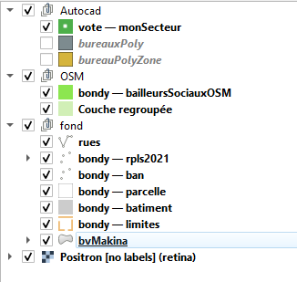
Savoirs faire QGIS :
outil groupe de couches
algorithme du peintre
ordonner ses couches en thématiques
la Couche regroupée est la parcelle cadastrale contenant le bâtiment OSM.
Le résultat est le suivant pour le bureau 1 (hôtel de ville)
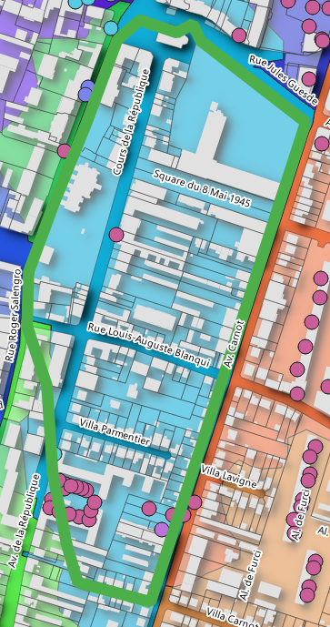 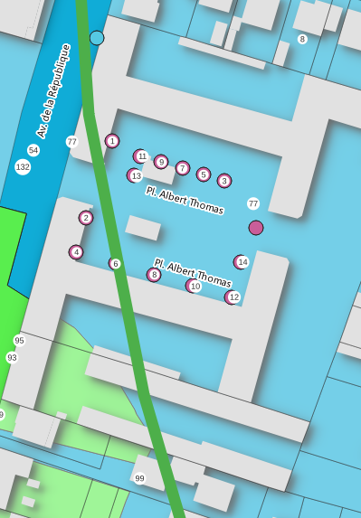
Essayer de reproduire le même type de carte pour son secteur.
3.3 Données internes : l’inventaire de 2013
3.3.1 Les zones
Repérer pour son bureau, la zone de logement social concernée
3.3.1.1 Les données
## Warning: le package 'sf' a été compilé avec la version R 4.2.3## Linking to GEOS 3.9.3, GDAL 3.5.2, PROJ 8.2.1; sf_use_s2() is TRUE## Driver: GPKG
## Available layers:
## layer_name geometry_type features fields crs_name
## 1 RPLS Point 9390 72 RGF93 v1 / Lambert-93
## 2 quartier Multi Polygon 8 1 RGF93 v1 / Lambert-933.3.1.2 Cartographie
## Warning: le package 'mapsf' a été compilé avec la version R 4.2.3png("img/zoneInventaire.png")
mf_map(zone)
mf_map(rpls, add = T)
mf_label(zone, "NOM_IRIS", halo = T, cex = 0.8, lines = T, overlap=F, pos = 3)
mf_layout("Zones inventaire bailleurs 2013 et logements sociaux 2021", credits = "Mairie de Bondy, août 2023")
dev.off()## png
## 2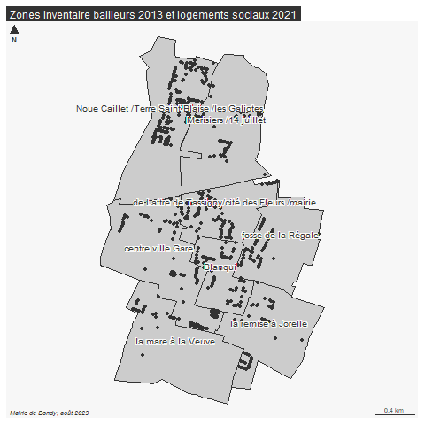
3.3.1.3 Bureau d’exemple
Pour le cas du bureau 1, on reconnait la zone * centre ville - gare*
3.3.2 Le nom des résidences
resid <- read.csv("data/bailleurInventaireCorrigeUTF8.csv", fileEncoding = "UTF-8")
# début du fichier
head(resid [resid$rue.si.différente.de.nom.résidence != "",])## bailleurs secteurs numSecteur
## 14 BONDY HABITAT Secteur Centre Ville/Gare 2
## 27 BONDY HABITAT Secteur de Lattre de Tassigny 3
## 32 EFIDIS Secteur De Lattre de Tassigny 3
## 34 BONDY HABITAT Secteur La Mare a la Veuve 5
## 36 3F IMMOBILIER Secteur Fosse de la Régale 4
## 40 ESPACE HABITAT Secteur La Mare a la Veuve 5
## residence rue.si.différente.de.nom.résidence numeros
## 14 Lamartine Polissard et Galliéni 2 et 80
## 27 Résidence de ’Ourcq De Lattre de Tassigny 2bis – 4 bis
## 32 Résidence des Cerises Robert Douvillez 2
## 34 Résidence du Levant la Paix 27 – 31
## 36 Cos Résiduel Barbusse 121
## 40 Résidence l’Europe Salengro 107-117## bailleurs secteurs numSecteur residence
## 14 BONDY HABITAT Secteur Centre Ville/Gare 2 Lamartine
## 15 BONDY HABITAT Secteur Centre Ville/Gare 2 Guesde
## 16 BONDY HABITAT Secteur Centre Ville/Gare 2 Le Potager
## 17 BONDY HABITAT Secteur Centre Ville/Gare 2 Albert Thomas
## 18 BONDY HABITAT Secteur Centre Ville/Gare 2 Furci
## 19 BONDY HABITAT Secteur Centre Ville/Gare 2 Egalité
## 20 3F IMMOBILIER Secteur Centre Ville/Gare 2 Guesde
## 21 ICF LA SABLIERE Secteur Centre Ville/Gare 2 Polissard
## rue.si.différente.de.nom.résidence numeros
## 14 Polissard et Galliéni 2 et 80
## 15 15-23
## 16 2-22
## 17 ensemble
## 18 1-7 2-16
## 19 un seul numéro
## 20 49-53
## 21 24-28Il s’agit du début de fichier. La colonne “rue.si…” indique la rue concernée si elle est différente du nom de la cité. Généralement, les résidences portent le nom de la rue qui passe devant l’immeuble.
Le nom de la résidence est bien Albert Thomas.
On cherche à identifier également les autres points non saisis dans OSM en utilisant l’outil identifier de QGIS.
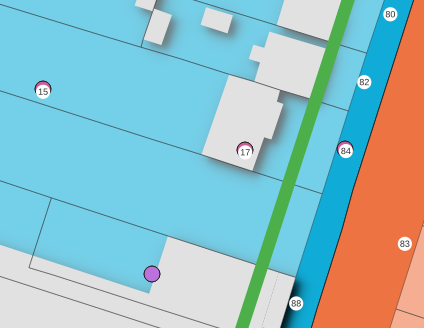 Il s’agit ici du 84 et 88 avenue Carnot. Noter également la position de 15 et du 17 Albert Thomas qui appartiennent à l’ensemble.
Le rpls donne l’année, le nom du bailleur et le nom de la résidence. Ces 3 informations sont également à saisir dans OSM.
Retrouver les tags utilisés par les étudiants de l’année dernière soit sous overpass turbo, soit sous JOSM. Comment faire ?
3.4 Modfication des limites du secteur
3.4.1 Au niveau des résidences sociales
Dans Qgis, on va utiliser les outils dits de numérisation pour modifier son secteur en englobant les résidences sociales exclues des périmètres.
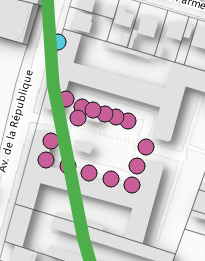 
3.4.2 Au niveau des rues
On pourrait également utiliser le listing des bureaux de vote (découpagePropre.csv) pour vérifier les tracés.
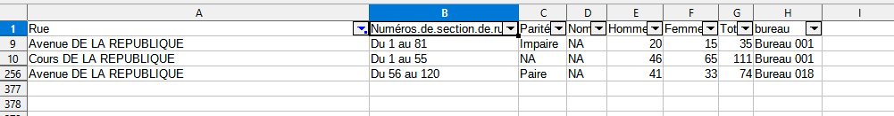
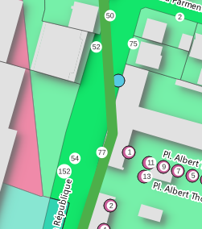
Dans ce cas, on décide de modifier le contour Autocad en suivant celui de Makina.
## Driver: GPKG
## Available layers:
## layer_name geometry_type features fields crs_name
## 1 bureauxPoly Multi Polygon 32 4 RGF93 v1 / Lambert-93
## 2 bvMakina Multi Polygon 32 4 RGF93 v1 / Lambert-93
## 3 bureauPolyZone Multi Polygon 32 2 RGF93 v1 / Lambert-93
## 4 monSecteur Multi Polygon 1 2 RGF93 v1 / Lambert-93
## 5 resultat Multi Polygon 32 6 RGF93 v1 / Lambert-93## Reading layer `monSecteur' from data source
## `C:\Users\tachasa\coursP8\data\vote.gpkg' using driver `GPKG'
## Simple feature collection with 1 feature and 2 fields
## Geometry type: MULTIPOLYGON
## Dimension: XY
## Bounding box: xmin: 661781.8 ymin: 6866550 xmax: 662062.4 ymax: 6867135
## Projected CRS: RGF93 v1 / Lambert-93## Reading layer `bureauPolyZone' from data source
## `C:\Users\tachasa\coursP8\data\vote.gpkg' using driver `GPKG'
## Simple feature collection with 32 features and 2 fields
## Geometry type: MULTIPOLYGON
## Dimension: XY
## Bounding box: xmin: 661088.1 ymin: 6865338 xmax: 663354.7 ymax: 6869043
## Projected CRS: RGF93 v1 / Lambert-93## Reading layer `bvMakina' from data source
## `C:\Users\tachasa\coursP8\data\vote.gpkg' using driver `GPKG'
## Simple feature collection with 32 features and 4 fields
## Geometry type: MULTIPOLYGON
## Dimension: XY
## Bounding box: xmin: 661067.2 ymin: 6865340 xmax: 663349.8 ymax: 6869044
## Projected CRS: RGF93 v1 / Lambert-93png("img/bureau1.png")
mf_map(monSecteur, border = "green")
mf_map(autocad, border = "red",col = NA,add = T)
mf_map(makina, border= "blue", col = NA,add = T)
mf_layout("Modification secteur bureau 1", credits = "Mairie de Bondy, août 2023")
dev.off()## png
## 2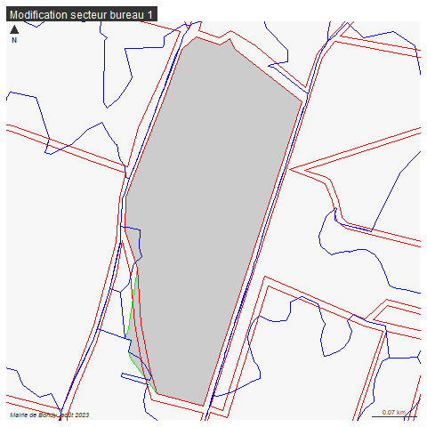
4 Saisissons !
Nous avons 2 types de modifications à faire :
Les résidences sociales manquantes
le périmètre du bureau de vote à insérer
4.2 périmètre bureau de vote
- importer le calque dans JOSM (format geojson et projection 4326)
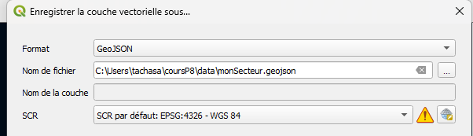
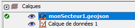
repérer les tracés (ways) déjà existants et rajouter les autres
sélectionner l’ensemble des tracés et tagger comme une relation
Dans notre cas, bureau de vote numéro 1, comme c’est le premier, il n’y a pas de polygone adjacent, donc la relation est utilisée uniquement pour associer le bureau de vote et le périmètre.
On sélectionne le secteur, et on fusionne sur le calque d’OSM
Le panneau relation est à afficher (Alt + Maj + R)
Les tags sont :
boundary=political
political_division=bureau de vote
source=ville de Bondy
type=boundary
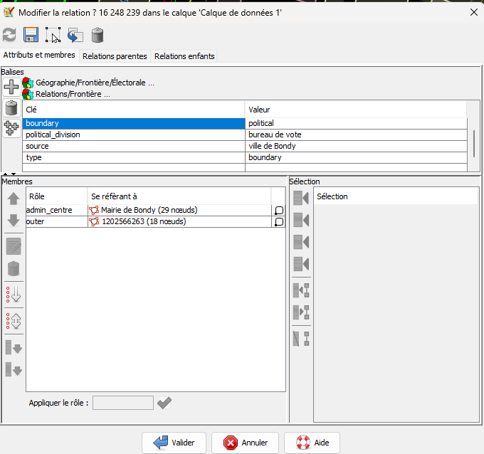
Ne pas oublier de donner le rôle : admin_centre et outer
4.3 Bilan de la saisie
Temps de saisie, 15 mn puis cycles de 30 mn.
A compléter sur retour des étudiants
quantitatif : combien de saisies par étudiants
qualitatif : quelles difficultés ?
cours Paris8-Bondy2023 - bureaux de vote